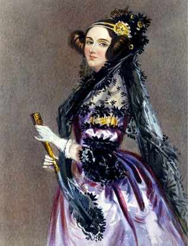

"Ada, Countess of Lovelace, 1840"
Here's a time line of Ada Lovelace's Life
- 1815 - Born in London, England
- 1824 - At age 9, Ada designs a steam-powered flying machine.
- 1825 - Ada battles with a variety of illnesses during her childhool from blinding headaches to a paralizing bout of measles. She is bedridden for almost a year.
- 1830 - Ada meets a mathematician Charles Babbage. It's a friendship that would change the course of both of their lives.
- 1835 - Ada marries William King, an english aristocrat.
- 1836 - Ada bears a son named Byron King-Noel, named after her father.
- 1837 - Ada's second child, a daughter, is born. 1838 - Ada's husband, William King, becomes the Earl of Lovelace, giving Ada the title of "The Right Honourable the Countess of Lovelace." Ada goes down in history as Ada Lovelace.
- 1839 - Ada gives birth to a second son named Ralph Gordan.
- 1842 - Italian mathematician Luigi Menabrea publishes his paper on Babbage's lecture on the Analytical Engine. Lovelace translates and expands the article, adding notes from her personal knowledge about the engine.
- 1843 - Ada completes her work on the Menabrea Paper. In one section, she describes an algorithm for the Analytical Engine to compute Bernoulli Numbers. For this, we recognize Ada as the first computer programmer. She was the first person to publish an in-depth set of instructions that a computing device could use to reach a result that had not been previously calculated.
- 1842 - Ada is recognized as first programmer
- 1839 - Ada gives birth to a second son named Ralph Gordan.
- 1842 - Italian mathematician Luigi Menabrea publishes his paper on Babbage's lecture on the Analytical Engine. Lovelace translates and expands the article, adding notes from her personal knowledge about the engine.
- 1843 - Ada completes her work on the Menabrea Paper. In one section, she describes an algorithm for the Analytical Engine to compute Bernoulli Numbers. For this, we recognize Ada as the first computer programmer. She was the first person to publish an in-depth set of instructions that a computing device could use to reach a result that had not been previously calculated.
- 1851 - Ada attempts to create a mathematical model for success in placing large bets. The plan fails and she falls into deep debt. Throughout this period of her life she is followed by rumors of extramarital affairs.
- 1852 - Ada dies from uterine cancer when she is 36, the same age as her father when he passed away.